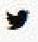
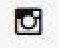

Copyright © 2014 by Avoc
Made with Love by Spab Rice
Made with Love by Spab Rice
Efimer is a project based on the concept that fashion is
ephemeral. To represent this idea I designed a haute
couture collection made by vegetables, which are
ephemeral too. I decided to paint the vegetables to give
uniformity at the clothes and express the purity that
provides the white color.
awwwards - Special Mention
csswinner - Winner of the Day
cssreel - Winner of the Day